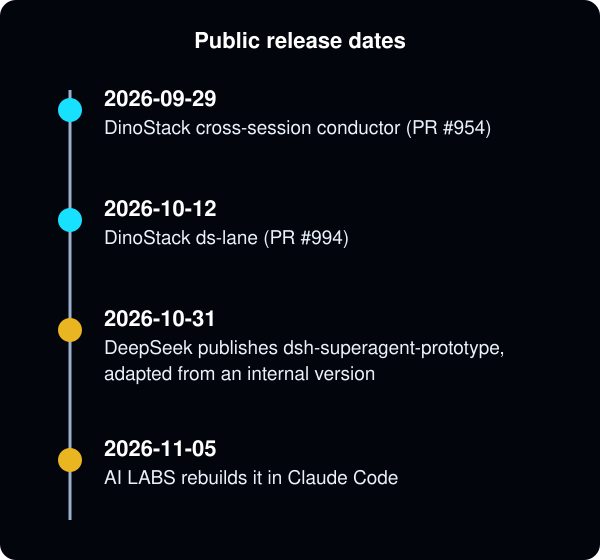
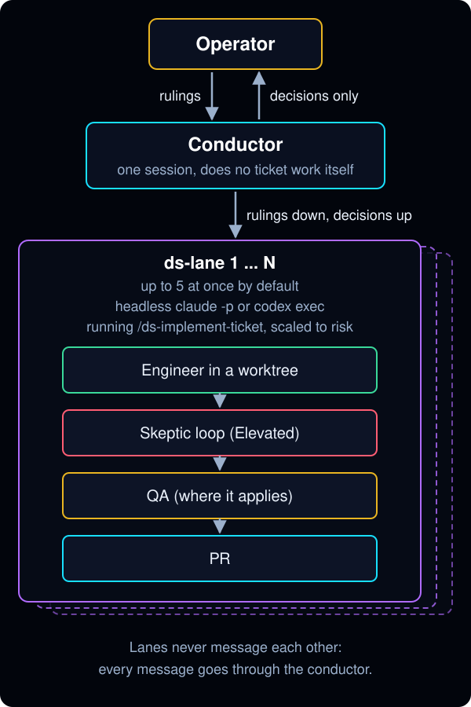

DinoStack already runs DeepSeek's "super agent" pattern, and has since September
DeepSeek released dsh-superagent-prototype, a research prototype built for DeepSeek Harness, on October 31, and AI LABS rebuilt it in Claude Code on November 5. The idea is that you talk to one router agent. It never does the work itself and only hands tickets to workers, each in its own context. Each result is checked against a written spec, and the router only comes back to you when there's a decision to make.
DinoStack shipped the same pattern a month earlier:
- September 29: the cross-session conductor. One session coordinates a wave of tickets, sends rulings to the sessions doing the work, and brings only real decisions back to you.
- October 12:
ds-lane, which starts each ticket as its own headless Claude Code session, with up to 5 running at once by default. Codex lanes followed on October 14.

Each lane is more than a single worker. It runs DinoStack's full ticket workflow:
- an engineer working in an isolated worktree
- an adversarial Skeptic review loop with a round cap
- a QA agent checking against the ticket's acceptance criteria
- a PR, which can merge on its own once CI passes when auto-merge is turned on

The pieces in the video map one to one:
- The ticket skill that writes
rd.mdandeval.mdis/ds-briefplus each ticket'sqa_criteria. - The dependency board is
/ds-ticket-triage's dependency-ordered lanes, which the conductor runs wave by wave. - Cheaper models for workers come from per-agent model tiers.
- The reproducer agent is
debugger.
There are a few places where we chose differently:
- Lanes don't talk to each other. Every message goes through the conductor.
- Each lane opens its own PR, so there's no merger agent.
- Stalled lanes are caught by a mechanical wait with a cron backstop rather than a watchdog model checking every 10 minutes.
It's good to see the pattern confirmed from outside. A person can keep track of three to five sessions, while a router can keep track of far more.
Sources
- DinoStack PR #954: optional cross-session runbook conductor, merged 2026-09-29 (commit
6798905cf) - DinoStack PR #994:
ds-lane, conductor-launched headless lanes, merged 2026-10-12 (commit3b8f82373) - DinoStack PR #1019: lanes inherit the invoking harness, adding Codex lanes, merged 2026-10-14 (commit
ba027c12c) - deepseek-ai/dsh-superagent-prototype: repository created 2026-10-31
- AI LABS, "Deepseek Just Released The Greatest Claude Code Workflow Ever": YouTube, 2026-11-05